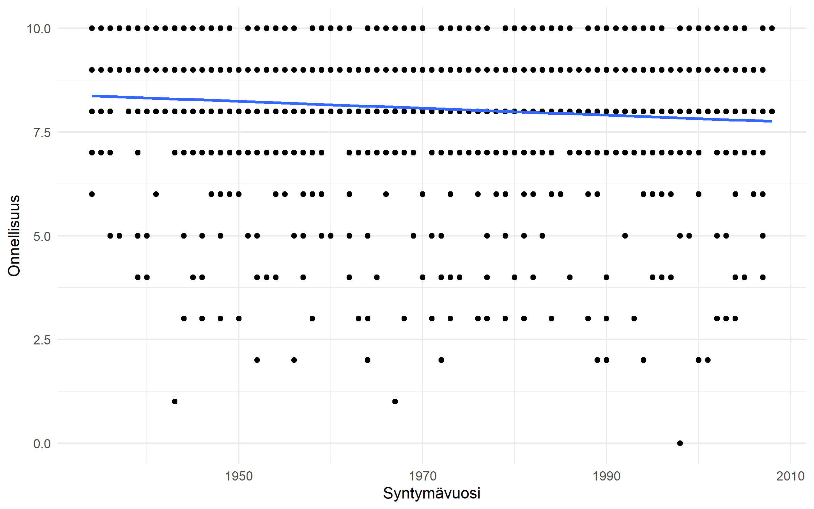
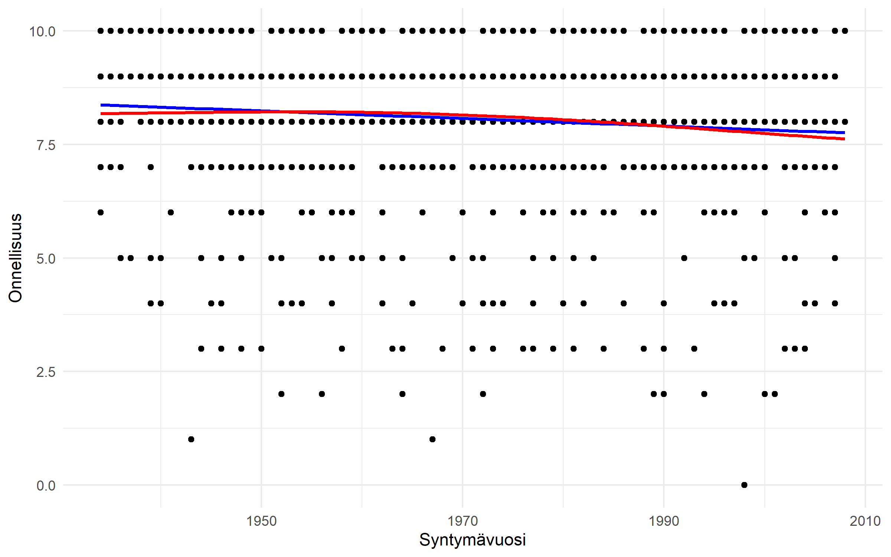

Regressioanalyysi on keskeisin tilastollisen tutkimuksen menetelmä. Lineaarinen regressioanalyysi ennustaa selitettävän tekijän vaihtelua yhden tai useamman selittäjän eri arvoilla. Useimmat tavalliset tilastolliset menetelmät ovat regressioanalyysin erikoistapauksia, ja useimmat edistyneet menetelmät ovat yleisen tai yleistetyn regressiomenetelmät perheen jäseniä, joissa logiikka on sama, mutta jotakin regression osaa vaihdetaan.
Yksinkertainen lineaarinen regressio
Yksinkertaisin tapaus on yhden selittäjän regressio, joka ennustaa yhden selitettävän tekijän ehdollisia keskiarvoja. Koska ennustetaan keskiarvoja, selitettävän tekijän tulee olla jatkuva. Selittävät tekijät voivat olla mitä tahansa ja R osaa huomioida muuttujien oikean käytön, kunhan olet määritellyt muuttujat aineistossa oikein.
Jatkuvalla selittäjällä regression tulos eli regressiokerroin kertoo mitä tapahtuu selitettävän keskiarvolle, kun selittäjä kasvaa yhdellä yksiköllä.
Luokitellulla selittäjällä regressiokerroin kertoo mitä tapahtuu selitettävän keskiarvolle, kun verrataan muita ryhmiä vuorollaan ns. vertailuryhmään. R käyttää vertailuryhmänä automaattisesti luokiteltujen selittäjien joukossa ensimmäistä ryhmää, mutta vertailuryhmän voi määritellä itse relevel()-komennolla. R tulostaa taulukkoon aina sen ryhmän, jota nyt verrataan, ja vertailuryhmä on se muuttujan ryhmä, joka ei näy taulukossa (kyseistä ryhmää ei tietenkään tarvitse itseensä verrata).
Regressio suoritetaan komennolla lm(), joka tarkoittaa “linear model”. Komennolle annetaan kaava, jossa selitettävä tekijä tulee ensin, seuraavaksi tilde ~ ja sitten selittäjä. Kaavan jälkeen määritellään aineisto, josta malli lasketaan. Tuloksia voi tarkastella pikaisesti komennolla summary(), joka antaa mallin tilastolliset tunnusluvut, kuten regressiokertoimet, niiden tilastollisen merkitsevyyden ja mallin selitysasteen R²:n.
malli1 <-lm(C1 ~ Syntymävuosi, data = ESS2023)summary(malli1)
Call:
lm(formula = C1 ~ Syntymävuosi, data = ESS2023)
Residuals:
Min 1Q Median 3Q Max
-7.8421 -0.2917 0.0913 0.9081 2.2412
Coefficients:
Estimate Std. Error t value Pr(>|t|)
(Intercept) 24.478770 3.787955 6.462 1.38e-10 ***
Syntymävuosi -0.008327 0.001923 -4.331 1.58e-05 ***
---
Signif. codes: 0 '***' 0.001 '**' 0.01 '*' 0.05 '.' 0.1 ' ' 1
Residual standard error: 1.467 on 1558 degrees of freedom
(3 observations deleted due to missingness)
Multiple R-squared: 0.0119, Adjusted R-squared: 0.01126
F-statistic: 18.76 on 1 and 1558 DF, p-value: 1.579e-05
malli2 <-lm(C1 ~as_factor(Sukupuoli), data = ESS2023)summary(malli2)
Call:
lm(formula = C1 ~ as_factor(Sukupuoli), data = ESS2023)
Residuals:
Min 1Q Median 3Q Max
-8.1402 -0.1402 -0.0052 0.8598 1.9948
Coefficients:
Estimate Std. Error t value Pr(>|t|)
(Intercept) 8.00521 0.05319 150.498 <2e-16 ***
as_factor(Sukupuoli)Nainen 0.13494 0.07465 1.808 0.0709 .
---
Signif. codes: 0 '***' 0.001 '**' 0.01 '*' 0.05 '.' 0.1 ' ' 1
Residual standard error: 1.474 on 1558 degrees of freedom
(3 observations deleted due to missingness)
Multiple R-squared: 0.002093, Adjusted R-squared: 0.001452
F-statistic: 3.268 on 1 and 1558 DF, p-value: 0.07086
Useamman selittävän tekijän regressio
Useamman selittävän tekijän regressio tehdään samalla lm()-komennolla, mutta kaavaan määritellään useampi selittäjä. Regressiokertoimet kertovat, mitä tapahtuu selitettävän keskiarvolle, kun kukin selittäjä kasvaa yhdellä yksiköllä, mutta kaikki muut selittäjät pidetään vakioina.
malli3 <-lm(C1 ~ Syntymävuosi +as_factor(Sukupuoli), data = ESS2023)summary(malli3)
Call:
lm(formula = C1 ~ Syntymävuosi + as_factor(Sukupuoli), data = ESS2023)
Residuals:
Min 1Q Median 3Q Max
-7.9091 -0.3209 0.1076 0.9070 2.3125
Coefficients:
Estimate Std. Error t value Pr(>|t|)
(Intercept) 24.476110 3.784971 6.467 1.34e-10 ***
Syntymävuosi -0.008361 0.001921 -4.352 1.44e-05 ***
as_factor(Sukupuoli)Nainen 0.138038 0.074229 1.860 0.0631 .
---
Signif. codes: 0 '***' 0.001 '**' 0.01 '*' 0.05 '.' 0.1 ' ' 1
Residual standard error: 1.466 on 1557 degrees of freedom
(3 observations deleted due to missingness)
Multiple R-squared: 0.01409, Adjusted R-squared: 0.01282
F-statistic: 11.12 on 2 and 1557 DF, p-value: 1.598e-05
Regressiomallin visualisointi
Regressiomallin voi visualisoida helposti hajontakuviolla, kun siinä on yksi jatkuva selittäjä (ja mahdollisesti yksi luokiteltu selittäjä).
ggplot(ESS2023, aes(x = Syntymävuosi, y = C1)) +geom_point() +geom_smooth(method ="lm", se =FALSE) +labs(x ="Syntymävuosi", y ="Onnellisuus") +theme_minimal()

Tulosten raportointi
Tulostaulukoita voi rakentaa komennolla tidy(). Tiedot mallista saa taulukkomuodossa, jossa on regressiokertoimet, niiden tilastollinen merkitsevyys ja luottamusvälit. conf.int=TRUE-argumentti lisää taulukkoon luottamusvälit. Taulukko on R:n data frame -muodossa, joten sitä voi muokata haluamakseen mutate()-komennolla, ja esimerkiksi pyöristää numeeriset sarakkeet halutun tarkkuisiksi mutate(across(where(is.numeric), ~ round(.x, 2)))-komennolla. Voit myös nimetä sarakkeet suomenkielisiksi rename()-komennolla, ja järjestää sarakkeet haluamaasi järjestykseen select()-komennolla.
Regressioanalyysiin liittyy tiettyjä oletuksia, jotka rajoittavat mallin käyttökelpoisuutta ja yleisetettävyyttä. Ne on hyvä tarkastaa, mutta vain harvoin niiden perusteella kannattaa mallia hylätä. Oletuksia on viisi, ja niistä kaksi ensimmäistä ja tärkeintä koskevat aineistoa ja yhteyttä yleensä, kolme viimeistä regression ns. virheitä. Regression tulosten perusteella voidaan siis laskea jokaiselle aineiston havainnolle mallin ennustama selitettävän tekijän arvo, ja mallin ennustama arvo ja havainnon todellinen arvo eivät yleensä ole täsmälleen samoja, vaan niissä on eroa. Tätä eroa kutsutaan virheeksi, ja mallin oletukset koskevat näitä virheitä. Oletukset ovat:
Validiteetti
Mallin ja muuttujien teoreettista pohdintaa.
Lineaarisuus
Lineaarisuutta voidaan tarkastella kuviolla - voit esimerkiksi piirtää lineaarisen mallin ennusteet ja lineaarisuusoletusta käyttämättömän mallin samaan kuvioon. Jos lineaarisuus pätee, mallien ennusteet ovat hyvin samankaltaisia, mutta jos lineaarisuus ei päde, mallien ennusteet eroavat toisistaan.
ggplot(ESS2023, aes(x = Syntymävuosi, y = C1)) +geom_point() +geom_smooth(method ="lm", se =FALSE, color ="blue") +geom_smooth(method ="gam", se =FALSE, color ="red") +labs(x ="Syntymävuosi", y ="Onnellisuus") +theme_minimal() +scale_color_manual(values =c("blue", "red"), labels =c("Lineaarinen malli", "Loess-malli")) +theme(legend.title =element_blank())

Virheiden riippumattomuus toisistaan
Esim. onko sama vastaaja vastannut kahdesti kyselyyn.
Virheiden varianssin yhtenäisyys selittäjien eri arvoilla
Virheiden yhtä
Virheiden normaalijakauma
Lähdekoodi
---title: "Regressioanalyysi"---```{r}#| include: falsesource("_common.R")```Regressioanalyysi on keskeisin tilastollisen tutkimuksen menetelmä. Lineaarinen regressioanalyysi ennustaa selitettävän tekijän vaihtelua yhden tai useamman selittäjän eri arvoilla. Useimmat tavalliset tilastolliset menetelmät ovat regressioanalyysin erikoistapauksia, ja useimmat edistyneet menetelmät ovat yleisen tai yleistetyn regressiomenetelmät perheen jäseniä, joissa logiikka on sama, mutta jotakin regression osaa vaihdetaan.## Yksinkertainen lineaarinen regressioYksinkertaisin tapaus on yhden selittäjän regressio, joka ennustaa yhden selitettävän tekijän ehdollisia keskiarvoja. Koska ennustetaan keskiarvoja, selitettävän tekijän tulee olla jatkuva. Selittävät tekijät voivat olla mitä tahansa ja R osaa huomioida muuttujien oikean käytön, kunhan olet määritellyt muuttujat aineistossa oikein.Jatkuvalla selittäjällä regression tulos eli regressiokerroin kertoo mitä tapahtuu selitettävän keskiarvolle, kun selittäjä kasvaa yhdellä yksiköllä. Luokitellulla selittäjällä regressiokerroin kertoo mitä tapahtuu selitettävän keskiarvolle, kun verrataan muita ryhmiä vuorollaan ns. vertailuryhmään. R käyttää vertailuryhmänä automaattisesti luokiteltujen selittäjien joukossa ensimmäistä ryhmää, mutta vertailuryhmän voi määritellä itse `relevel()`-komennolla. R tulostaa taulukkoon aina sen ryhmän, jota nyt verrataan, ja vertailuryhmä on se muuttujan ryhmä, joka ei näy taulukossa (kyseistä ryhmää ei tietenkään tarvitse itseensä verrata).Regressio suoritetaan komennolla `lm()`, joka tarkoittaa "linear model". Komennolle annetaan kaava, jossa selitettävä tekijä tulee ensin, seuraavaksi tilde ~ ja sitten selittäjä. Kaavan jälkeen määritellään aineisto, josta malli lasketaan. Tuloksia voi tarkastella pikaisesti komennolla `summary()`, joka antaa mallin tilastolliset tunnusluvut, kuten regressiokertoimet, niiden tilastollisen merkitsevyyden ja mallin selitysasteen R²:n.```{r}malli1 <-lm(C1 ~ Syntymävuosi, data = ESS2023)summary(malli1)malli2 <-lm(C1 ~as_factor(Sukupuoli), data = ESS2023)summary(malli2)```## Useamman selittävän tekijän regressioUseamman selittävän tekijän regressio tehdään samalla `lm()`-komennolla, mutta kaavaan määritellään useampi selittäjä. Regressiokertoimet kertovat, mitä tapahtuu selitettävän keskiarvolle, kun kukin selittäjä kasvaa yhdellä yksiköllä, mutta kaikki muut selittäjät pidetään vakioina.```{r}malli3 <-lm(C1 ~ Syntymävuosi +as_factor(Sukupuoli), data = ESS2023)summary(malli3)```## Regressiomallin visualisointiRegressiomallin voi visualisoida helposti hajontakuviolla, kun siinä on yksi jatkuva selittäjä (ja mahdollisesti yksi luokiteltu selittäjä). ```{r}ggplot(ESS2023, aes(x = Syntymävuosi, y = C1)) +geom_point() +geom_smooth(method ="lm", se =FALSE) +labs(x ="Syntymävuosi", y ="Onnellisuus") +theme_minimal()```## Tulosten raportointiTulostaulukoita voi rakentaa komennolla tidy(). Tiedot mallista saa taulukkomuodossa, jossa on regressiokertoimet, niiden tilastollinen merkitsevyys ja luottamusvälit. `conf.int=TRUE`-argumentti lisää taulukkoon luottamusvälit. Taulukko on R:n data frame -muodossa, joten sitä voi muokata haluamakseen `mutate()`-komennolla, ja esimerkiksi pyöristää numeeriset sarakkeet halutun tarkkuisiksi `mutate(across(where(is.numeric), ~ round(.x, 2)))`-komennolla. Voit myös nimetä sarakkeet suomenkielisiksi `rename()`-komennolla, ja järjestää sarakkeet haluamaasi järjestykseen `select()`-komennolla. ```{r}taulukko1 <- malli1 |>tidy(conf.int=TRUE)taulukko1taulukko_mallit <-bind_rows("Malli 1"=tidy(malli1, conf.int =TRUE),"Malli 2"=tidy(malli2, conf.int =TRUE),"Malli 3"=tidy(malli3, conf.int =TRUE),.id ="malli") ```## Mallin oletukset ja diagnostiikkaRegressioanalyysiin liittyy tiettyjä oletuksia, jotka rajoittavat mallin käyttökelpoisuutta ja yleisetettävyyttä. Ne on hyvä tarkastaa, mutta vain harvoin niiden perusteella kannattaa mallia hylätä. Oletuksia on viisi, ja niistä kaksi ensimmäistä ja tärkeintä koskevat aineistoa ja yhteyttä yleensä, kolme viimeistä regression ns. virheitä. Regression tulosten perusteella voidaan siis laskea jokaiselle aineiston havainnolle mallin ennustama selitettävän tekijän arvo, ja mallin ennustama arvo ja havainnon todellinen arvo eivät yleensä ole täsmälleen samoja, vaan niissä on eroa. Tätä eroa kutsutaan virheeksi, ja mallin oletukset koskevat näitä virheitä. Oletukset ovat:1) Validiteetti Mallin ja muuttujien teoreettista pohdintaa.2) LineaarisuusLineaarisuutta voidaan tarkastella kuviolla - voit esimerkiksi piirtää lineaarisen mallin ennusteet ja lineaarisuusoletusta käyttämättömän mallin samaan kuvioon. Jos lineaarisuus pätee, mallien ennusteet ovat hyvin samankaltaisia, mutta jos lineaarisuus ei päde, mallien ennusteet eroavat toisistaan.```{r}ggplot(ESS2023, aes(x = Syntymävuosi, y = C1)) +geom_point() +geom_smooth(method ="lm", se =FALSE, color ="blue") +geom_smooth(method ="gam", se =FALSE, color ="red") +labs(x ="Syntymävuosi", y ="Onnellisuus") +theme_minimal() +scale_color_manual(values =c("blue", "red"), labels =c("Lineaarinen malli", "Loess-malli")) +theme(legend.title =element_blank())```3) Virheiden riippumattomuus toisistaanEsim. onko sama vastaaja vastannut kahdesti kyselyyn.4) Virheiden varianssin yhtenäisyys selittäjien eri arvoillaVirheiden yhtä```{r}```5) Virheiden normaalijakauma